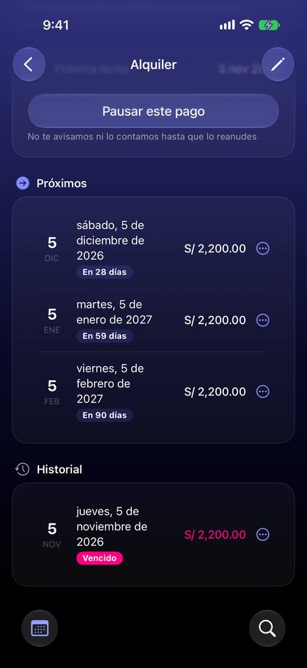

Apuntar un pago no se puede deshacer, «Ya no está pagado» deja el gasto y saltar se anuncia como pagado
Hoy
Capturas del simulador con la semilla de pruebas «realista» (Pro, modo oscuro). Pasos hoy: Deshacer un apunte: 3 toques (fecha, «Ya no está pagado») y borrar el gasto aparte en Registros




De dónde sale
- Captura Captura tras «Apuntar»: el detalle pasa a «Noviembre de 2026 ya está pagado» y no sale ningún aviso.
- Captura Captura de Netflix tras «Saltar este mes»: «✓ Noviembre de 2026 ya está pagado», con «Saltado» en la lista de debajo.
- Código
ScheduledPaymentDetailView.swift:202-210: «mes hecho» = pagado o saltado;:251-258lo rotula siempre «ya está pagado» (bug). - Código
ViewModels/ScheduledPaymentsViewModel.swift:702-731: «Ya no está pagado» solo ponescheduledPaymentID = nil; el registro se queda. - Código
Services/ScheduledPaymentPayNow.swift:20-80: «Apuntar» aprueba un borrador por la vía de la Bandeja y crea el registro.
Las opciones
De 3 a 5 alternativas con el mismo caso. Desliza cada recorrido; el anillo cian marca dónde toca Ana.
Aviso con «Deshacer» al apuntar
Al apuntar un pago sale el mismo aviso que al saltar: «Apuntaste S/ 60 en Cuenta Principal · Deshacer». Deshacer borra el registro recién creado y devuelve el pago a «Por pagar».
Apuntarlo ahora
A favor
- Iguala pagar con saltar, que ya tiene «Deshacer».
- Dice dónde quedó el gasto (cuenta), que hoy no se ve en ningún sitio.
- Un toque equivocado deja de crear un gasto que hay que ir a borrar a Registros.
En contra
- Borrar un registro desde un aviso necesita la misma red que el borrado de Registros (borrado diferido).
«Ya no está pagado» pregunta qué hacer con el gasto
Hoy «Ya no está pagado» solo desvincula: el gasto de S/ 2,200 se queda en Registros y, si Ana vuelve a marcarlo, habrá dos. La propuesta pregunta antes: borrar el gasto, dejarlo como gasto suelto o cancelar.
¿Qué hacemos con él?
A favor
- Evita el gasto doble que hoy es fácil de provocar.
- Es una decisión sobre datos: preguntar es lo que hace la app en otros sitios.
En contra
- Un paso más en un gesto poco frecuente.
- Hay que decidir qué hace con un gasto que se apuntó a mano (no lo creó el pago).
El mes dice si se pagó o se saltó
Tras saltar un mes, el detalle hoy dice «Noviembre de 2026 ya está pagado». La propuesta separa los dos casos: «Noviembre: saltado» (gris, con «No saltar») y «Noviembre: pagado el 7» (con el registro a un toque).
A favor
- Arregla un texto que hoy dice algo falso (es un bug).
- Une en una línea lo que hoy está repartido entre el detalle y el historial.
En contra
- No añade «Deshacer» a pagar: complementa a D1, no lo sustituye.
El registro creado, a la vista en el detalle
Tras apuntar, el detalle enseña una tarjeta pequeña con el registro: importe, fecha, cuenta y dos acciones, «Ver» y «Quitar». Quitar hace lo de D2 sin pasar por el menú de la fecha.
Lo apuntado en noviembre
Se borra el gasto de S/ 60 del 7 de noviembre y el Teléfono vuelve a «Por pagar».
A favor
- Lo que la app creó queda visible, no solo en Registros.
- Sirve también días después, cuando el aviso de D1 ya se fue.
En contra
- Más contenido en un detalle que ya es largo (Próximos e Historial debajo).
Lado a lado
La última pantalla de cada recorrido, frente a hoy.
Se borra el gasto de S/ 60 del 7 de noviembre y el Teléfono vuelve a «Por pagar».
Comparación
| Opción | Pasos para el caso (maqueta) | Esfuerzo | Riesgo | Reabre |
|---|---|---|---|---|
| Hoy | Deshacer un apunte: 3 toques (fecha, «Ya no está pagado») y borrar el gasto aparte en Registros | — | — | — |
| D1 · Aviso con «Deshacer» al apuntar | 1 toque para deshacer | medio | medio | — |
| D2 · «Ya no está pagado» pregunta qué hacer con el gasto | 3 toques | bajo-medio | bajo | — |
| D3 · El mes dice si se pagó o se saltó | 0 toques | bajo | bajo | — |
| D4 · El registro creado, a la vista en el detalle | 2 toques | medio | bajo | — |
Lente de perfiles
Perfiles simulados, no entrevistas Los siete perfiles de la revisión del usuario nuevo, usados como lentes. riesgo alto de trabarse · medio · bajo.
| Perfil | Hoy | D1 | D2 | D3 | D4 |
|---|---|---|---|---|---|
| P1 · Migrante de Excel | gasto duplicado en su cuenta | ve dónde se apuntó | evita duplicados en su cuenta | dato exacto | ve el asiento |
| P2 · Principiante abrumado | «ya está pagado» cuando lo saltó | puede arrepentirse | le explican qué pasa | no le miente | — |
| P3 · Anotador rápido que no lee | toca y sigue | — | un paso más | — | más que leer |
| P4 · Experto de otra app | nota el duplicado tarde | — | control | — | — |
| P5 · Llega por una invitación de grupo | — | un pago de grupo no pasa por aquí | — | — | — |
| P6 · Varias monedas y tarjeta | — | dice la cuenta | — | — | — |
| P7 · Texto grande, a veces en iPad | menú pequeño por fecha | el aviso dura unos segundos | alerta clara | — | detalle más largo |
Recomendación: D1
Pagar y saltar deben comportarse igual: un aviso que dice qué pasó y deja deshacer. D1 cubre el error inmediato; D2 cierra el agujero del gasto doble cuando el arrepentimiento llega más tarde, y D3 corrige el texto falso (es un bug, va con cualquiera). Recomendación: D1 + D2 + D3. D4 solo si se quiere que lo apuntado se vea en el detalle.
Qué decide Jürgen
- ¿Aviso con «Deshacer» al apuntar, que borra el registro creado (D1)?
- «Ya no está pagado»: ¿pregunta qué hacer con el gasto (D2)? ¿Y si el gasto lo apuntó la persona a mano?
- El texto del mes saltado (D3) es un bug: ¿se arregla ya, fuera de esta revisión?
Revisión por vistas 2.3 · Planificación. Maquetas en HTML con datos ficticios: no son la app. Pasos contados sobre las maquetas; los de «Hoy», en el simulador o en el código citado.